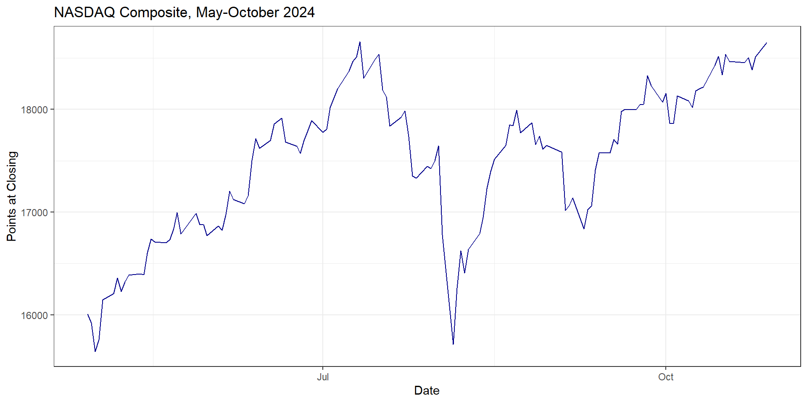

Environmental Data Analysis and Visualization
Does Anybody Really Know What Time It Is?
Warm-Up Exercise
Create a new R project and Quarto document for this lecture. Download the walkability.csv dataset. Using pipes (%>%), create a dataset with the following variables:
Core-Based Statistical Area (CBSA) name (excluding the state)
Population (only above 4 million)
National Walkability Index score (note: this may not be immediately obvious)
If you still have time, show the distribution of walkability index scores for all CBSAs in this new dataset.
Warm-Up Exercise
<- read_csv ("data/walkability.csv" )%>% separate (CBSA_Name,into= c ("Cities" ,"States" ),sep= "," ,extra= "drop" ) %>% select (Cities,CBSA_POP,NatWalkInd) %>% filter (CBSA_POP> 4000000 )
# A tibble: 65,108 × 3
Cities CBSA_POP NatWalkInd
<chr> <dbl> <dbl>
1 Dallas-Fort Worth-Arlington 7189384 14
2 Dallas-Fort Worth-Arlington 7189384 10.8
3 Dallas-Fort Worth-Arlington 7189384 8.33
4 Dallas-Fort Worth-Arlington 7189384 15.7
5 Dallas-Fort Worth-Arlington 7189384 10.2
6 Dallas-Fort Worth-Arlington 7189384 6.83
7 Dallas-Fort Worth-Arlington 7189384 8
8 Dallas-Fort Worth-Arlington 7189384 13.2
9 Dallas-Fort Worth-Arlington 7189384 10.5
10 Dallas-Fort Worth-Arlington 7189384 8.67
# ℹ 65,098 more rows
Warm-Up Exercise
<- read_csv ("data/walkability.csv" )%>% separate (CBSA_Name,into= c ("Cities" ,"States" ),sep= "," ,extra= "drop" ) %>% select (Cities,CBSA_POP,NatWalkInd) %>% filter (CBSA_POP> 4000000 ) %>% ggplot (aes (x= reorder (Cities,NatWalkInd,median),y= NatWalkInd)) + geom_boxplot () + labs (x= "CBSA" ,y= "Walkability Index" ) + coord_flip ()
Visualization critique
USA Today via Trent Tucker
Visualization critique
Axios
Visualization critique
CSIS
Dataset of the day
The quantmod package
library (quantmod) #load quantmod package getSymbols ("XOM" ) #get data for exxon mobil head (XOM) #look at first six lines
XOM.Open XOM.High XOM.Low XOM.Close XOM.Volume XOM.Adjusted
2007-01-03 76.26 76.27 73.51 74.11 30510700 38.61195
2007-01-04 73.85 73.90 72.21 72.72 31046600 37.88776
2007-01-05 72.45 73.38 72.22 73.24 24671500 38.15868
2007-01-08 73.88 74.25 71.85 72.65 25981900 37.85130
2007-01-09 71.85 72.84 71.44 72.09 27039900 37.55951
2007-01-10 71.81 73.11 70.64 70.99 30572000 36.98640
Dates as data
#convert to tibble, convert row names to date column <- as_tibble (XOM,rownames= "Date" ) %>% mutate (Date= ymd (Date)) #convert to date values
# A tibble: 4,730 × 7
Date XOM.Open XOM.High XOM.Low XOM.Close XOM.Volume XOM.Adjusted
<date> <dbl> <dbl> <dbl> <dbl> <dbl> <dbl>
1 2007-01-03 76.3 76.3 73.5 74.1 30510700 38.6
2 2007-01-04 73.8 73.9 72.2 72.7 31046600 37.9
3 2007-01-05 72.4 73.4 72.2 73.2 24671500 38.2
4 2007-01-08 73.9 74.2 71.8 72.7 25981900 37.9
5 2007-01-09 71.8 72.8 71.4 72.1 27039900 37.6
6 2007-01-10 71.8 73.1 70.6 71.0 30572000 37.0
7 2007-01-11 71.0 72.8 70.8 71.0 29161700 37.0
8 2007-01-12 71.2 72.7 71.2 72.7 24438700 37.9
9 2007-01-16 72.5 72.7 71.2 71.6 25444400 37.3
10 2007-01-17 71.5 72.6 71.4 72.5 31292200 37.8
# ℹ 4,720 more rows
Dataset of the day
The quantmod package
Time: what is it?
Time: what is it?
Time by itself isn’t something that varies in a meaningful way.
Time: what is it?
Time by itself isn’t something that varies in a meaningful way.
Time has a defined order , but you can’t always count time like a category, nor can you really treat it like a number with magnitude relationships.
Time: what is it?
R can store time data as character values…
"2025-10-21"
"10/21/2025"
"16:43:26"
Time: what is it?
…but it can also store some kinds of time data as numbers.
Time: what is it?
R can also recognize time as particular objects like date and date-time objects. For example:
#give today's date as a date object today ()#give the precise time as a date-time object now ()
[1] "2025-10-21 16:01:47 EDT"
Handling time data
The lubridate package lets us convert between other values and time objects. This comes pre-loaded with tidyverse.
Handling time data
#storing the date as a character value <- "2025-10-21"
Handling time data
# converting the date to a date object ymd (todaysDate)
Handling time data
ymd = year, month, day e.g., 2025/10/21
dmy = day, month, year e.g., 21/10/2025
mdy = month, day, year e.g., 10/21/2025
Quick activity: Making a date
Try converting the following to dates from characters to date objects using ymd, dmy, or mdy.
“29 February 2000”
“07/20/1969”
“1980-Dec-11”
Visualizing time data
NASDAQ Composite data
<- read_csv ("data/nasdaq.csv" )
# A tibble: 127 × 5
Date `Close/Last` Open High Low
<chr> <dbl> <dbl> <dbl> <dbl>
1 10/28/2024 18567. 18648. 18671. 18563.
2 10/25/2024 18519. 18513. 18690. 18487.
3 10/24/2024 18415. 18384. 18435. 18305.
4 10/23/2024 18277. 18502. 18509. 18147.
5 10/22/2024 18573. 18452. 18621. 18413.
6 10/21/2024 18540 18456. 18544. 18378.
7 10/18/2024 18490. 18466 18524. 18453.
8 10/17/2024 18374. 18537. 18541. 18369.
9 10/16/2024 18367. 18333. 18383. 18215.
10 10/15/2024 18316. 18516. 18564. 18253.
# ℹ 117 more rows
Visualizing time data
ggplot (nasdaq,aes (x= Date,y= Open)) + geom_line (color= "darkblue" ) + labs (x= "Date" ,y= "Points at Closing" ,title= "NASDAQ Composite, May-October 2024" ) + theme_bw ()
Visualizing time data
ggplot (nasdaq,aes (x= mdy (Date),y= Open)) + geom_line (color= "darkblue" ) + labs (x= "Date" ,y= "Points at Closing" ,title= "NASDAQ Composite, May-October 2024" ) + theme_bw ()

Handling time data
lubridate also has functions that allow you to extract parts of dates…
Handling time data
…or ways of accessing different expressions of date information (like the day of the week or name of a month).
wday (todaysDate,label= TRUE , abbr= FALSE )
[1] Tuesday
7 Levels: Sunday < Monday < Tuesday < Wednesday < Thursday < ... < Saturday
Quick activity: Making a day of it
Pick any day within the last 500 years. It could be your birthday, your sibling or parents birthday, or even some non-birthday date. Store it as a character object.
Use the appropriate lubridateymd, mdy, dmy).
Use the wday function to figure out on which day of the week your date fell. You can use the label and abbr arguments to turn it into a named day of the week.
Handling time data
These functions can come in handy if you want to evaluate patterns that relate to temporal structure.
#Which month is the most volatile in terms of Exxon daily price range? %>% mutate (Price_Range= XOM.High- XOM.Low) %>% #get daily price range mutate (Month= month (Date,label= TRUE )) %>% #get month name select (Month,Price_Range) %>% #subset to month and range ggplot (aes (Month,Price_Range)) + geom_boxplot ()
Handling time data
These functions can come in handy if you want to evaluate patterns that relate to temporal structure.
Effectively communicating with visuals
What’s the headline?
Drawing the eye
Conveying the mood
What’s the headline?
What is the headline for this graph?
Drawing the eye
It’s easy for the headline to get lost in a data graph. It’s OK to help the audience find it.
Drawing the eye
shahriyarshahrabi.medium.com
Drawing the eye
shahriyarshahrabi.medium.com
Drawing the eye to the headline
Knaflic, Cole Nussbaumer. 2019. Storytelling with Data . New York: Wiley.
Drawing the eye to the headline
Knaflic, Cole Nussbaumer. 2019. Storytelling with Data . New York: Wiley.
For your projects
How might you arrange your graphs/tests in a narrative sequence?
If you had to tell your story in three-ish headlines, what would they be?
Is the interpretation of the graphs obvious? Or are there things you might do to make the important parts stand out?
Given your data and mappings, are there opportunities to use color to communicate mood in your graphs without sacrificing readability?